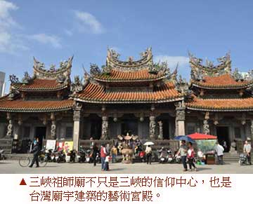
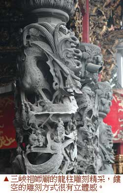
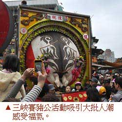

三峽祖師廟百年老街添春福
巧奪天工的祖師廟，加上近百年歷史的老街，塑造台北三峽成為北部最有年味的小鎮。
黃麗如｜中國時報／旅遊∣2013年2月16日
蛇牛又稱小龍年，要看壯觀的廟宇龍柱，就得到有東方藝術殿堂之稱的三峽祖師廟走一遭，感受藝術大師李梅樹打造的精緻廟宇。在地文史工作者黃肇銘說：「祖師廟所有的裝飾都是為了祈福，繞一圈即可感受滿滿的福氣。」
精雕藝術 虔誠祈福
由藝術家李梅樹打造的祖師廟，是以藝術的方式傳達對清水祖師爺虔敬的信仰，他號召藝術家以石雕、木雕、銅雕等方式，把吉祥的圖騰、儒家的思想、祈福的渴望、民間的傳奇刻劃在廟宇的每個角落，黃肇銘老師指出，祖師廟最吸引人的就是石雕，三川殿的石柱與正殿前的龍柱、花鳥柱深具可看性，當中最精采的就是在正殿前的「百鳥朝梅」柱，對柱共有一百隻鳥，每一隻姿態不同、活靈活現，是台灣廟宇工藝的極品。
此外，祖師廟的木雕也是台灣廟宇建築美學的極致表現，入口處上方的藻井不用一釘一鐵，完全是木頭一塊接一塊從四方形轉成六角形，最後變成圓形，完美的表達天圓地方的和諧，而藻井旁有十六隻木雕的鳳凰，隻隻氣韻生動，是觀賞焦點。黃肇銘表示，祖師廟建於1769年，經過三次重建，現在看到的是民國三十六年重建的結果，當時李梅樹擇防蛀的檜木和樟木，所以這些作品得以完整保留。
十二銅門 工藝新風格
不同於大部分的廟宇是木門，三峽祖師廟的十二扇門均為銅門，廟內的牆面有豐富的銅塑作品，是台灣少數以銅塑裝飾廟宇的傑作。據悉，當時主導廟宇設計的李梅樹，考慮到彩繪容易被香火燻黑不好保存，所以帶領國立藝專的學生以銅塑代替彩繪，立下廟宇工藝新風格。
麗如老實說過年期間三峽祖師廟和老街一帶總是塞車，建議最好搭大眾交通工具來三峽，比方搭捷運到永寧站再轉搭往三峽的公車、或是在捷運府中站也有很多公車，搭公車可省下找車位之苦。